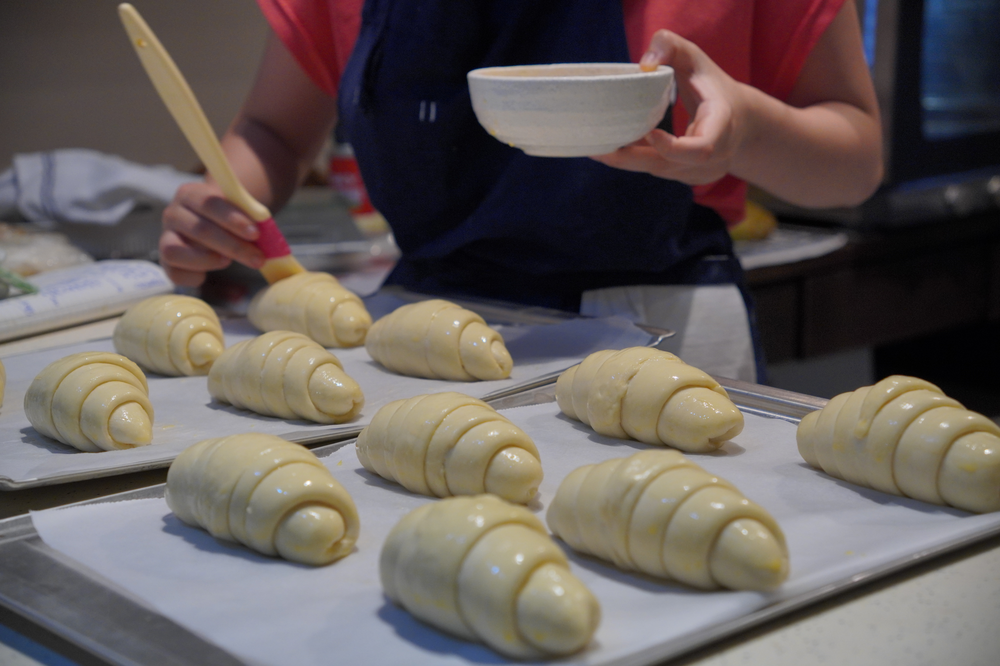
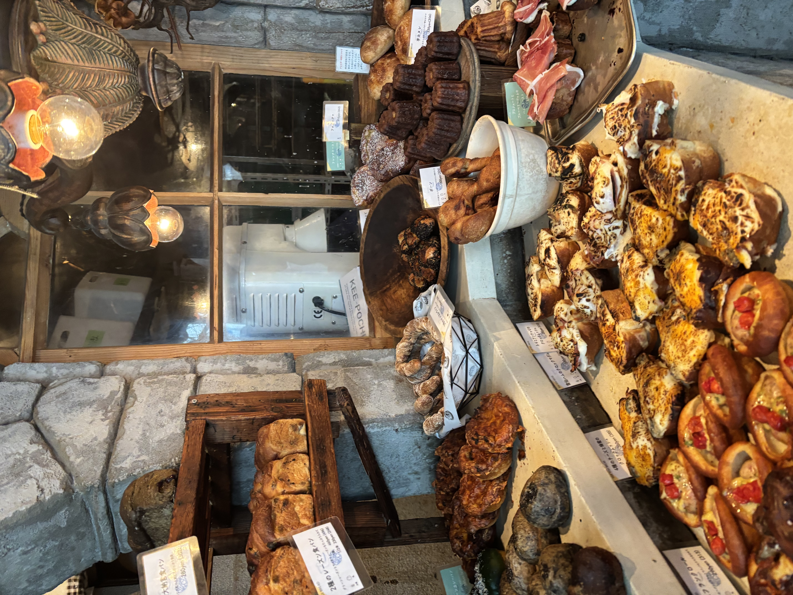
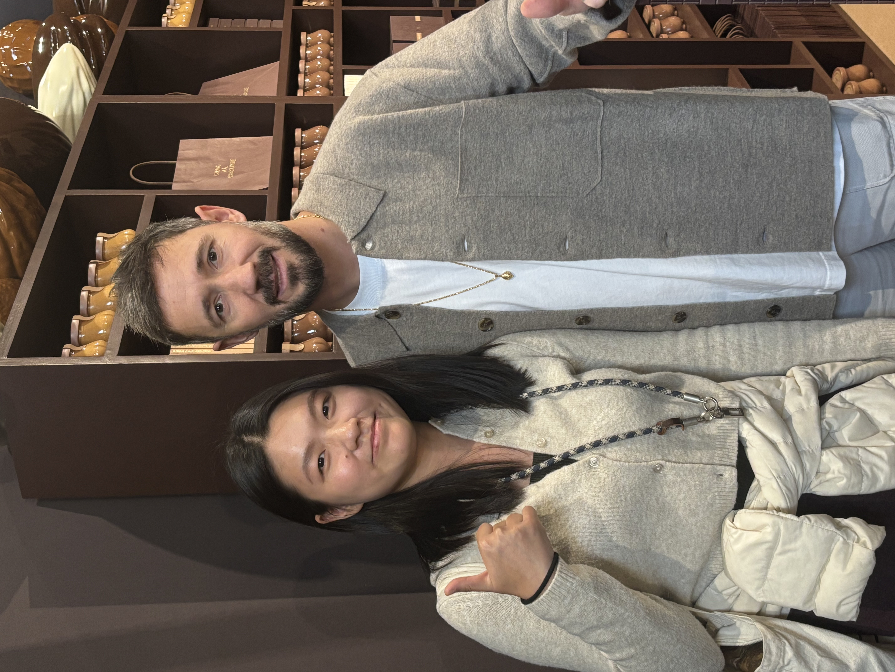
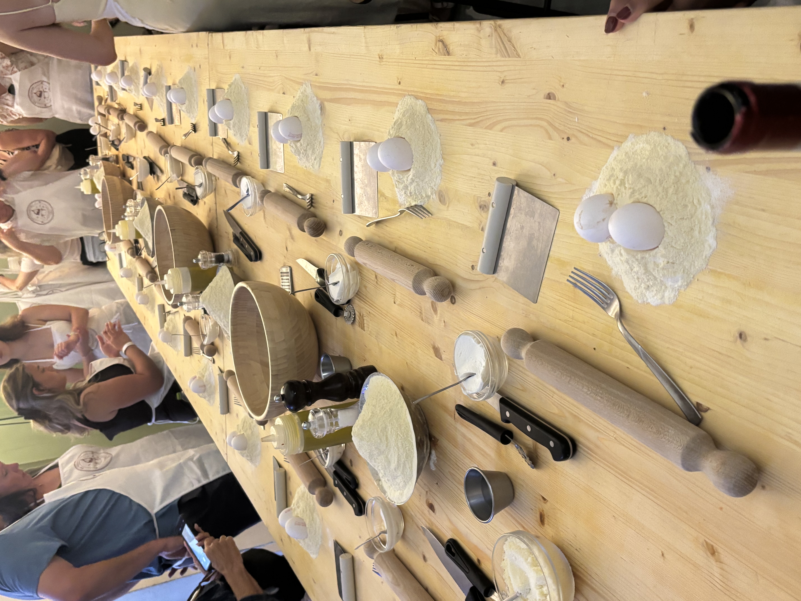
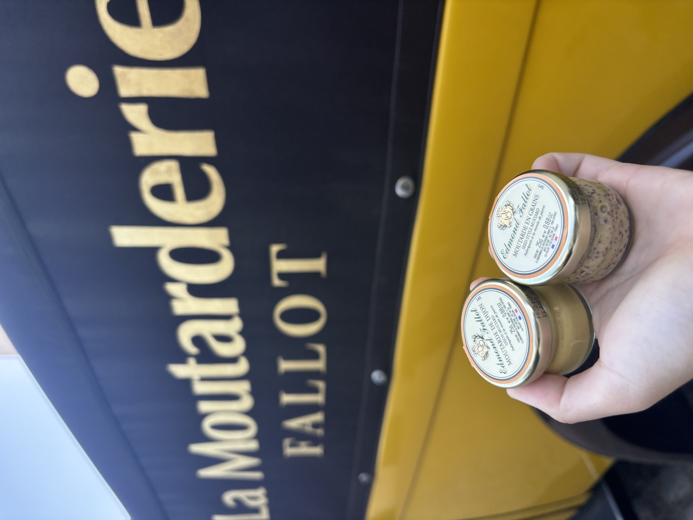

Future culinary talent in fine dining, pastry & artisan baking.
Culinary management student with hands-on experience in luxury kitchens, artisan bakeries, pastry development, and international culinary environments.

Bread was where everything began. I started baking young, fascinated by how simple ingredients could become something warm, beautiful, and full of character.
Later, pastry taught me precision and discipline. Each tart, each éclair demanded a decision before I even picked up a spatula. Professional kitchens then pushed me further — through pressure, consistency, and the kind of teamwork that either shapes you or breaks you.
Today, I hope to keep learning in world-class culinary environments while building a strong foundation across fine dining, pastry, and bakery craft.
From a home kitchen baking first loaves, to a production bakehouse, to fine dining kitchens alongside Michelin-starred guest chefs — each chapter built something essential.
Fine Dining Kitchen Management Intern
The Datai Langkawi, Malaysia
Rotated across hot and cold kitchens in a luxury resort fine dining environment, coordinating prep and plating during live service. Selected for the international Chef Series — assisting guest chefs from Evelyn's Table (1 Michelin Star, UK) and Re-Naa (3 Michelin Stars, Norway) in multi-course menu execution.
Pastry & Baking Intern
Universal Bakehouse, Malaysia
Daily production of sourdough and pastries in a high-volume commercial bakery. Rotated across bread, viennoiserie, and pastry stations — building real fluency in mixing, fermentation, gluten development, and shaping at speed.
Culinary Assistant
International Culinary Olympics Malaysia Team
Supported preparation, service execution, and kitchen coordination during training and competition runs. Managed timekeeping and ingredient logistics under competitive conditions.
Culinary Content Creator
@bite_mykitchen_ · Jinny 的发酵笔记
Built food content around bread and baking — R&D recipe testing, product styling, and video production. Generated 60,000+ organic views, with multiple videos exceeding 10K views each. Communicating food clearly is its own craft.
A curated selection of dishes, pastries, and projects — each one a small story about what I was learning or trying to understand.
Fine Dining
Roasted Lamb Rack, Bordelaise
Seared, roasted, rested. Bordelaise reduced to a glossy finish. Lyonnaise potato base.
Fine Dining
Pan-Seared Steak, Mushroom Ragout
Accuracy of doneness by touch. Ragout concentrated slow. Squash purée for texture contrast.
Fine Dining
Grilled Salmon, Seafood Jus
Crisp skin, tender centre. Jus built from prawn shells and roe. Seafood roulade alongside.
Pastry
Raspberry Araguani Éclair
Raspberry's acidity balanced against Araguani dark chocolate. French meringue for lift.
Pastry
Citrus Dulcey Tart
Dulcey's caramel sweetness lifted by orange zest. Pâte sucrée and jaconde base.
Bread & Viennoiserie
Enriched Dough & Shio Pan
Sweet and savoury enriched doughs — working with butter, milk, and fermentation timing.
Bread & Viennoiserie
Sourdough & Fermentation
Months of home and professional baking. Fermentation taught me patience and observation.
Bread & Viennoiserie
Viennoiserie Shaping & Lamination
Croissant shaping and laminated doughs at Universal Bakehouse — high-volume, exacting, meditative.
Private Dining
Jinny's Tasting Table
A home-based private dining project. Bread-centred menus, R&D ideas tested in a real setting.
Visiting bakeries, markets, and culinary spaces across Europe and Asia has shaped how I see ingredients, precision, and hospitality.




Hands-on kitchen experience
From luxury resort kitchens to high-volume artisan bakeries — real work, not classroom simulations.
Bread & pastry versatility
Comfortable across sourdough, viennoiserie, choux, tarts, and plated desserts. Still learning, always curious.
Calm under pressure
Service coordination, competition support, Michelin chef collaborations — I've learned to stay steady when it counts.
Global culinary curiosity
Markets, workshops, and bakeries across Europe and Asia. I pay attention wherever I go.
BSc (Hons) in Culinary Management
Sunway University, Malaysia
2025–2027 · CGPA 3.50
Bachelor in Management — Exchange
Burgundy School of Business, France
Sep – Dec 2025 · 16.13 / 20
Diploma in Culinary Arts
Sunway University · Le Cordon Bleu Certified
2023–2025 · CGPA 3.31
Young Chef Full Scholarship
Competitive merit scholarship for culinary talent, Sunway University 2023
Dean's List Award
Academic excellence, Faculty of Hospitality & Tourism
Exchange in Burgundy
Studied management at one of France's leading business schools
Le Cordon Bleu Certified
Diploma certified by one of the world's most respected culinary institutions
I hope to continue learning through high-standard kitchens, pastry teams, and bakery environments where discipline, creativity, and excellence are valued.
My goal is to build strong foundations now — and eventually create culinary experiences that are meaningful, precise, and worth remembering.
Open to internships in fine dining kitchens, pastry teams, artisan bakeries, and luxury hospitality.
Whether you're looking for a culinary intern, a passionate collaborator, or someone who can talk about fermentation for hours — I'd love to hear from you.
Selangor, Malaysia